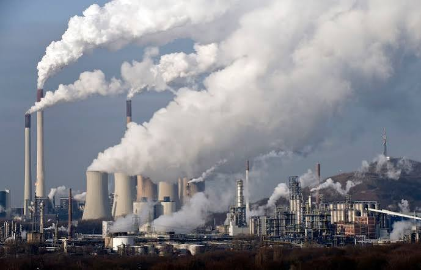
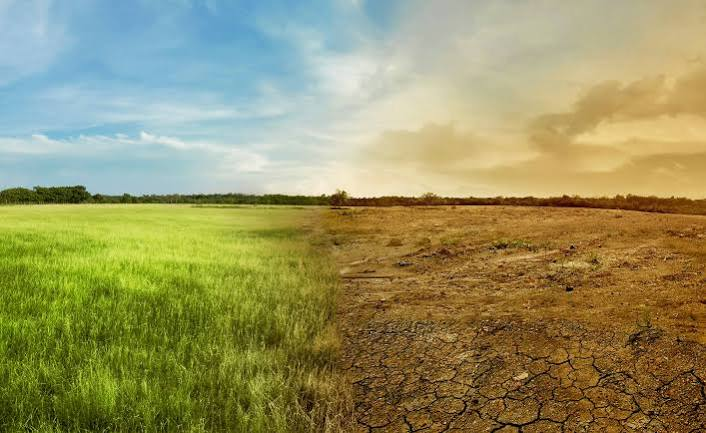

El calentamiento global es el aumento sostenido y a largo plazo de la temperatura media del planeta, provocado principalmente por la actividad humana. A través de la quema de combustibles fósiles, la deforestación y la industria, las personas liberan gases de efecto invernadero (GEI) que atrapan el calor del sol en la atmósfera. En 2024, la temperatura media mundial superó por primera vez el umbral de +1.5 °C en un año natural con respecto a los niveles preindustriales, lo que subraya la urgencia de este desafío. Aunque a menudo se usan como sinónimos, el calentamiento global es la causa directa de un fenómeno mucho más amplio: el cambio climático

